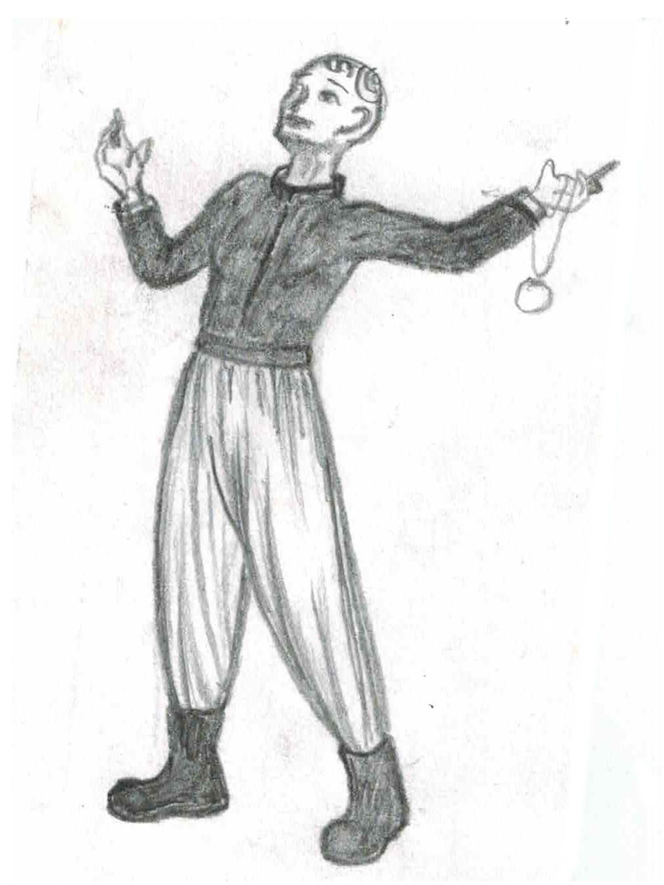

If not done so already, determine the amount of game time that has passed. It's common to begin or end a session with a period of recovery, either in downtime, or camping for several days.
If the party travels without one a character, e.g. a player can't make the session, there are two options. The character can forgo any town activities to be retconed to the party's current location at the start of a session, or they can meet with the dungeon master prior to the main session in order to play through that time.
The Scorekeeper (usually the Scribe) totals the value of the treasure, and splits it between the players.
Try to split the value evenly, while dicing or bargening for specific items.
Experience points (XP/EXP) is a measure of a PC's power, and creates progression.
At the start of the session, the Scorekeeper will begin a score card: a simple piece of paper to write down scores (enemies killed, treasure found, etc) as they happen.
At the end of the session, the Scorekeeper will confer with the dungeon master to confirm each score, and establish the total amount of XP. XP is divided evenly between all players. Players who had a character die can put the XP to their next character. The Score Keeper will announce the individual amount gained.
Recovering treasure from a dungeon scores 1 XP per 1 cp value of the treasure.
Potions and spell scrolls score 500 XP, while other magical items score 1000 XP.
Defeating monsters scores XP based on their HD, plus a bonus for each special ability. E.g. a 2 HD monster with an ability is worth 25 XP.
| HD | Base | Bonus |
|---|---|---|
| <1 | 5 | 1 |
| 1 | 10 | 3 |
| 2 | 20 | 5 |
| 3 | 35 | 15 |
| 4 | 75 | 50 |
| 5, 6, | 300 | 250 |
| 7, 8, | 650 | 550 |
| ≥9 | 1000 | 700 |
Exactly mapping a complete dungeon level scores XP equal to 1000 times the depth of the level. The dungeon master may decrease this (by upto 90%) for very small or simple levels, or increase it (by upto 400%) for very large or complex levels. They might also divide levels into regions, and award based on that.
Returning someone from captivity to their society of origin scores 100 xp.
Relics are historical objects, that come with research points. Scores 100 xp per point.
See roles.
Anyone who writes at least 100 words about what happened in the session and shares it with the other players gains 100 * Lv XP.
On their birthday, a player can claim additional XP equal to their age.
Each class has one or two prime requisites, which grants bonus XP for having a high ability score.
Characters with at least a 13 in one prime requisite gain 10% extra XP.
Characters with at least a 13 in both gain 15% extra XP.
Characters with at least a 18 in one prime requisite gains 15% extra XP.

B.S.
When a character gains enough XP to reach the next level:
Characters cannot advance more than one level in one session. Leave the character 1 XP below the threshold for the next level. The remaining XP, at the player's discretion, be distributed among all other characters that went on the adventure (including NPCs).
A character of 2nd level or higher can be abandoned. They permanently leave the game. Abandoned characters can leave 50% of their wealth and 80% of their XP to a new character.
Simple burial prevents the body from being reanimated. Temples will bury and bless the dead for free. If a cleric uses one turn to perform a blessing, the soul will pass peacefully.
When a character is buried in town, a funeral can be given. For each cp spent on the funeral, that player gains 1 XP, to a maximum of 100 times the level of the character being buried. In addition, all players that attend the funeral gain XP equal to 10% of the total cp spent.
When a player's character dies, if they have a funeral, their new character can recoup 50% of the dead character's XP.
Cremation prevents reanimation and is impossible to undo.
Money and items stored in town will be subject to a 15% estate tax to local government or temple, and then inherited by the next of kin or listed heir. Further embezzlement can be done through downtime.
Returning from death leaves you exhausted. Until the reincarned gets two downtimes of bed rest, they have 1 HP, move at half the normal rate, cannot carry heavy items, and cannot attack, cast spells, or use class skills.
Each time a character is resurrected, their constitution is reduced by 1.
Should the adventurers be desperate for a way out, each player rolls a d12, adds their level, and subtracts the level of the dungeon they are on.
| d12 | Result |
|---|---|
| <=3 | You are consumed by the horrors below. You die and your body is unrecoverable. |
| 4 | You are slain and rise from the dead as a wight. It carries your equipment, and slaying it will be required to ressurect you. The dungeon master adds it to the wandering monsters. |
| 5 | Roll for dismemberment. If you die, your body is somewhere in the dungeon. |
| 6 | You are possesed! The dungeon master adds you to the wandering monsters. When encountered, you will be hostile, but can be captured and exorcized. |
| 7 | You are captured! You party members can pay randsom of 100cp x your level, or leave you hostage in the dungeon. Gain several rumors from your stay. |
| 8-11 | You have survived! |
| >=12 | You have survived, and the gods look favorably on you! If lawful: learn the location of a treasure. If chaotic: learn something about an enemy. If neutral: gain 100 xp. |